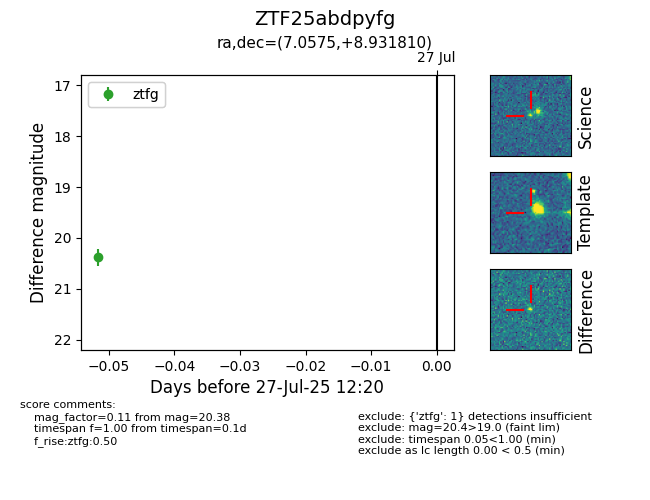

Target ZTF25abdpyfg at 2025-07-27 12:20, see:
FINK: fink-portal.org/ZTF25abdpyfg
Lasair: lasair-ztf.lsst.ac.uk/objects/ZTF25abdpyfg
ALeRCE: alerce.online/object/ZTF25abdpyfg
alt names
ZTF25abdpyfg (ztf,fink)
coordinates:
equatorial (ra, dec) = (7.0575,+8.93181)
galactic (l, b) = (113.2658,-53.50381)
photometry
last ztfg=20.38
1 ztfg detections
